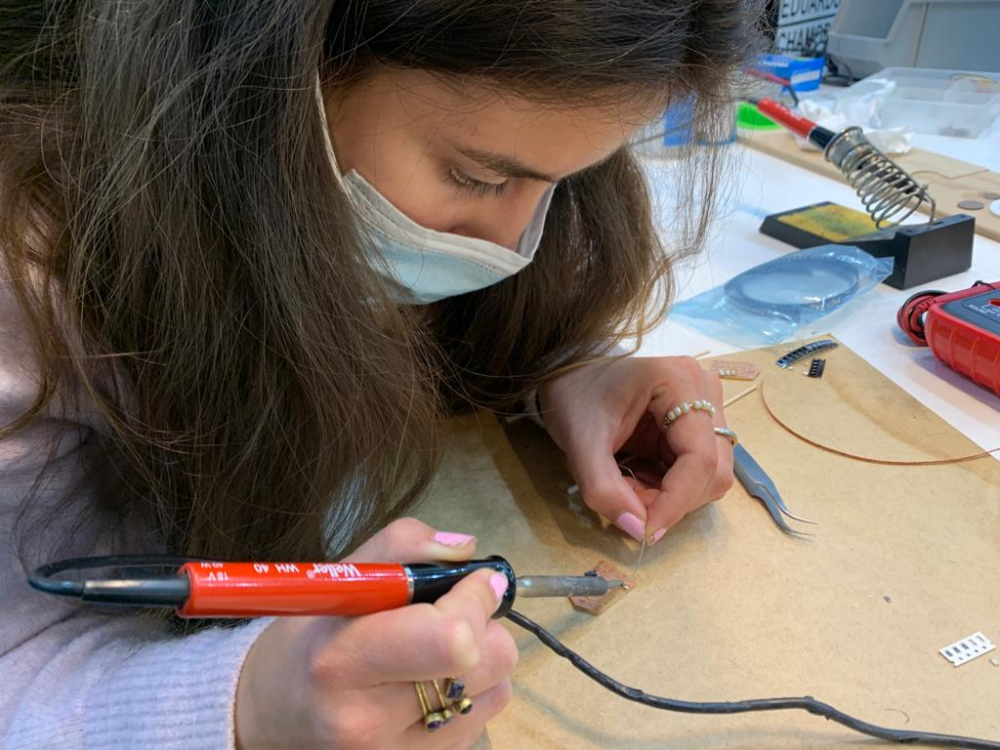

This first week my classmates and I were really excited to finally start the Fab Academy we had heard so much about and were waiting to get into. The first classes were not quite as active as I had expected, but it made sense since it was just the introductory course. I was a bit confused at first about the difference between Fab Academy as an official class and with MDEF. There were some other students in the main hall with us that were going to be joining in for Fabacademy. The first lesson about getting set up with Git and how Git works was informative as a refresher of the semantics behind it. However, I wish that I had received more of this general overview when I started coding and using GitHub. If I had not been familiar with any of the coding experience from first term, I think I would have been very lost so it did feel nice to feel like I knew what was being talked about. I’m still a little confused about how MarkDown works and how we will be using it for our new repositories with each challenge we do. I had no idea what the first global class would be like. Our MDEF group chat was inundated with messages because we did not understand exactly what the assignments were or what was expected of us, but I think it is more clear now that we will be focusing on what the local Barcelona classes are assigning for us. I’m not sure if I’ve ever been a participant in a zoom call with that many people before. It was awesome to be able to see FabLabs from all over the world and see how it really is an interconnected network of so many people of different backgrounds, each learning in their own spaces and then coming together once a week to learn collectively through zoom.
This week’s task was to look through previous students’ websites and note the way they documented for Fabacademy. By looking at other websites for documentation, I was also browsing and reading through, which helped me grasp what concepts I will be digging into and learning about which made me scared but excited. One thing I liked was from Ines Burdile's website. She broke up the weekly reflection in four different sections: facts, findings, feelings, and future. I think documenting like this was probably useful in helping Ines encompass the Fabacademy for herself and future readers as well. From Paco Flores' site, I noticed that he provided a link to all the github repositories that was highly visible. This made it easy for the viewer to view the documentation more in depth and also allow future students access to it if they needed. One thing I really liked from Morgan Shaban’s website was that she included initial and final questions. By opening up the beginning of the week like this and ending it with continued, but more developed and informed questions seems like a really good way of extending the week’s learnings. In the coming weeks I’d like to experiment with some of these ways of documenting as well as my own. I’ll start today.
Key Takeaway: Git is so important in coding technologies because of it’s open source model, collaborative functionality, and keeping a log of changes.
Question: What is the difference between Git and Linux and which one is used when?
Moment of !: Realizing what a big community of people who are doing the same thing I was being connected to globally.
For the week 2 introduction to Fab Academy, we focused on what could be done using computer programs in design. I was familiar with the terminology in terms of 2D digital design such as vector vs. raster, color formats, file format and quality, etc. We were told by Victor about different programs to use for 3D design along with explanations in 3D modeling styles. We learned about parametric design, which I see how it could be useful in a lot of applications, but would not be sure when it would be necessary to use it or not. We then got introduced to the 3D modeling program blender, which I had never used before. I never understood how programs like these could manage to be open-source when they are actually pretty advanced and offer a lot of features for free to its users. Blender was said to be “not in the same bucket as computer-aided design, but I don’t fully understand why. While explaining, Victor seemed passionate about Blender as a program and resource in itself and said that he has spent time writing code for plugins he wanted to create. The more and more I hear about open-source programs like these, I wonder if in the future and see it as a way forward to a more inclusive space in tech. Will it create too much competition with superpower companies such as Autodesk that charge 100s of dollars for their programs one day? I feel that there is a space for both. The beautiful thing about open-source programs such as Blender is that users have a choice to contribute some monetarily, and with this the company is able to hire some full-time employees to develop the program, as well as a large community of people that is willing to support and help one-another within the software.
Key takeaway: There are many many options of programs to choose from when it comes to 3D modeling, each with its own strengths in certain applications
Question: why shouldn’t parametric design be used in all modeling?
Moment of !: Open-source programs such as Blender are able to grow and stay alive because of the collaborative community of people that use it.
Assignment: We were instructed to design and create a 3D model related to our projects and then create a poster incorporating 2D elements to display it.
Going into this week, I was excited to hopefully get started on using the machines. Our main focus was on using the laser cutter and vinyl cutting machines. I actually enjoyed learning about the mechanics of the laser cutter, it is a fairly simple machine that can have different types of lenses and lasers such as CO2, neodymium, and fiber. We got demonstrations of both machines. I’m not sure if I had even realized there was a vinyl cutter in the FabLab. It seems like a fun machine to use for stickers and such, especially for doing things like screen printing which Santi showed us some examples of. Josep went through the process of creating a small piece with the laser cutter. Neither machine seems very complicated to use, and I have used the laser cutter before, so I think I just need some firsthand experience and practice with it to actually get it down. The main things with using these machines, along with any computer aided design, is to think about how the pieces will act in reality beforehand, such as allowing tolerance in the kerf, nesting to minimize waste, how pieces will fit seamlessly together, etc. This is why the emphasis on doing a test beforehand is so important.
Key takeaway: As long as parameters are set correctly and everything is checked/verified before using, laser and vinyl cutters are relatively easy to operate.
Question: What is the advantage of designing in 3D for a piece that is going to be cut in 2D say on the laser cutter?
Moment of !: LASER is an acronym, and it stands for light amplification by stimulated emission of radiation.
Assignment: Create a press-fit model using parametric design and produce it using wood/cardboard on the laser cutter and pass the pre-use machine test. With this assignment, I was very excited to use the laser cutter. However, I had to build the model first. I originally wanted to make some type of small decorative shelving system for my room. However, I had never used fusion before and felt I needed the help of a tutorial. Using fusion for the first time was intimidating and confusing, as I didn’t grasp onto the workflow quickly. I wanted to design something in strictly 2D that I could then cut on the laser cutter and put together afterwards, as I felt I could have created something much cooler and more fun than the laptop stand. However, I successfully designed my first parametric design in Fusion. I’m actually using the laptop stand right now! After finally sending the file to be cut, the press-fit joints fit together perfectly which I was surprised about because I was convinced that it would not have worked. After this exercise, I can say I’m confident and excited about using the laser cutter, but that I still need more work to get comfortable with fusion.
We continued with the hands on-learning this week, this time shifting our focus a bit to electronics. We learned all about PCBs- printed circuit boards. It was rather enlightening because I had no idea about types there were based on substrates, the result being different thicknesses, flexibility, and options of single or double sided PCBs and multilayered ones. At Fablab Barcelona, FR1s are used. The PCBs are made using many techniques. These include etching; using chemicals to eat the copper away, milling; cutting away at material, using a fiber laser; which has high quality and speed but may create microscopic-scale defects, and vinyl cutting; to create flexible plates but can be difficult to weld. We went through the setting for the milling using modsproject.org. It was honestly really hard to follow along, there were so many settings which I felt I would not remember. Using the machine to mill the PCB was an interesting process to watch, and also included multiple steps which I feel I would need to be reminded of if I use it again. When we got to solder the PCBs, I really enjoyed the process because I’m a fan of soldering and welding. You have to be very precise and watch what you are doing in order to make sure it works well.
Key takeaway: PCBs can be made using a variety of techniques, each with its own purpose and some may be better choices than others based on the application.
Question: How are the designs for the PCB boards made?
Moment of !: flexible PCBs can be made using the vinyl cutter and can even be used with textiles.
Assignment: Finish (by pairs) your LED BADGE soldering the smd components and test it(make the led light up with the power supply) Paula Del Rio and I soldered our board together in class (we forgot to take a picture of the final product). It was fun to solder the tiny pieces to the board. Using the multimeter, we got to see the light turn on which was satisfying. I would like to do more of this in the future.
